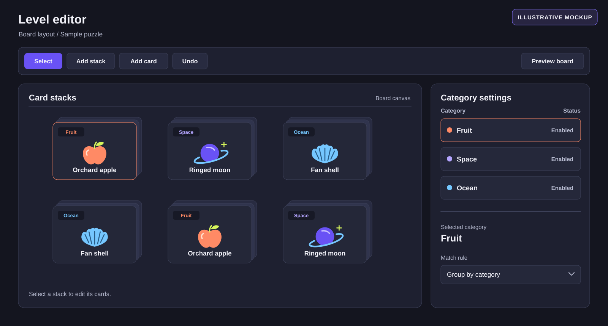
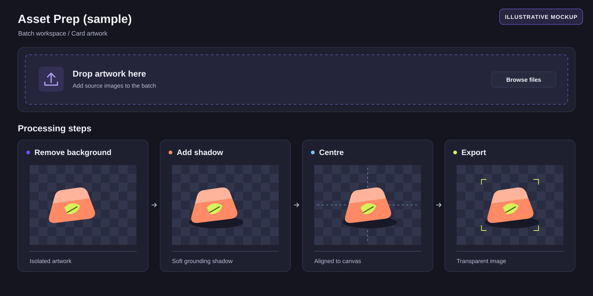
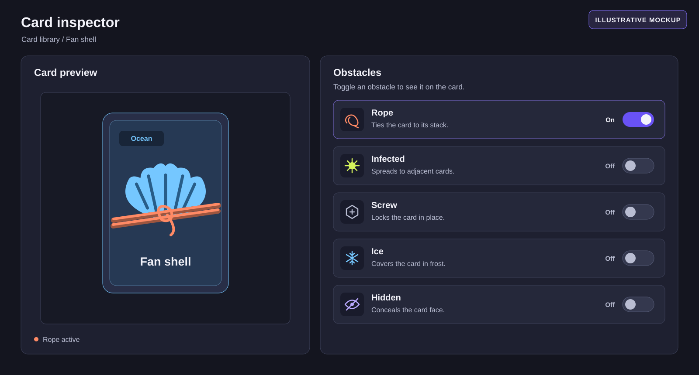
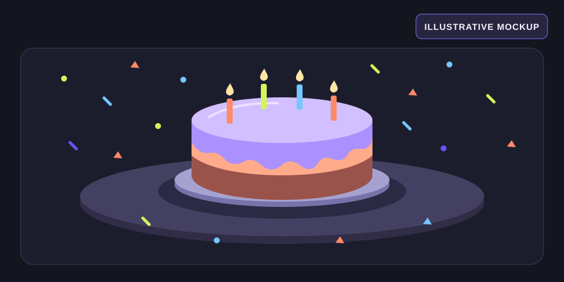

Category Sort is a hybrid casual sorting puzzle game where players organize memojis into matching categories. The project focused on designing engaging level progression, balancing difficulty curves, and creating strategic gameplay moments that encouraged rewarded video usage without compromising player retention or overall enjoyment.
400+levels delivered in 24 days
80%+less asset preparation time
1M+downloads
The visuals on this page are AI-made illustrations. They are not original game, studio or performance material.
Key highlights
1M+Downloads
40%D1 retention
7–8Rewarded videos per user
700+Levels designed & balanced
3–4 minAverage playtime per level
$4K–$5KAvg. daily revenue since launch (from May 29)
Grow from 300 to 700 levels in 24 days while keeping retention and monetization
Problem300 levels, 700 needed
ActionTeam of 4, templates, AI workflows
Result400+ levels in 24 days
Action
Led a team of 4 level designers and owned the end-to-end level production pipeline. Established level design standards, reusable templates, and AI-assisted workflows to accelerate production. Mentored designers, reviewed daily output, designed new gameplay features, and collaborated with art and engineering teams to remove bottlenecks and maintain quality.
Result
Delivered 400+ levels in 24 days while maintaining progression balance and content quality. Contributed to game growth, supporting $4K–$5K daily revenue through improved content delivery, feature additions, and level design strategy.

Level editor: illustrative mockup, not the original tool.
Challenge 02 · Production pipeline
Manual processing of AI-generated category assets was slowing level production
ProblemManual asset processing
ActionAutomated batch pipeline
Result80%+ less prep time
Action
Identified an asset-production bottleneck through workflow analysis and designed an automated asset-processing pipeline. Defined requirements, UX, and processing rules for an internal web tool, then collaborated with engineering to build a batch-processing solution that automatically removed backgrounds, applied shadows, centered assets, standardized outputs, and generated implementation-ready files. Tested, refined, and rolled out the workflow across art and level design teams.
Result
Reduced asset preparation time by 80%+, eliminated repetitive manual work, accelerated content production, and contributed to the successful expansion to 700 levels while maintaining content quality and production efficiency.

Asset pipeline: illustrative mockup, not the original tool.
Challenge 03 · Feature design
Keep gameplay fresh while the game expanded from 300 to 700 levels
ProblemKeep new levels fresh
ActionRope, Infected and Screw cards
ResultMore variety and depth
Action
Owned both feature and level design, creating and documenting mechanics such as Rope Cards, Infected Cards, and Screw Cards. Developed feature design documents covering player experience, rules, balancing, FTUE, edge cases, and implementation requirements. Collaborated with artists and developers, integrated features into the progression roadmap, and balanced difficulty across 700+ levels to maintain variety and engagement.
Result
Introduced multiple gameplay features that reduced repetition, increased level variety, and supported the successful delivery of 700 levels, improving progression depth and long-term player retention.

Card mechanics: illustrative mockup, not the original tool.
Summary
I joined Amgo Games in March 2025, when the studio had been working for 6+ years to achieve a major hit title.
Initially contributed to Category Sort by designing and balancing levels and supporting game iterations.
Later moved to a similar project, Triple Category Match, working on gameplay, content, and design improvements.
As Category Sort began showing strong market potential, moved back to support its growth.
Contributed to level design, feature iterations, balancing, content planning, and production processes.
Took ownership of level design and content scaling during a critical growth phase.
Helped expand the game from 300 to 700 levels in 24 days while maintaining quality and engagement.
Collaborated closely with designers, artists, developers, and producers to accelerate development.
I'm proud to have contributed to a game that became a significant milestone for both the team and the company after years of persistence and iteration.

Celebration: illustration, not a photo from the event.